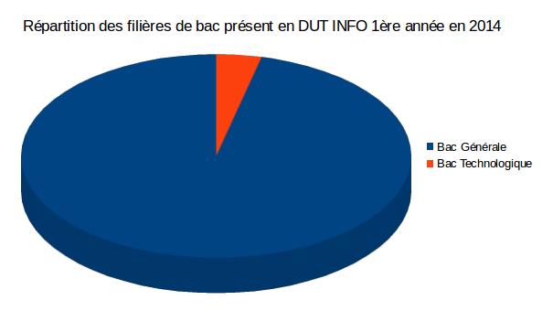
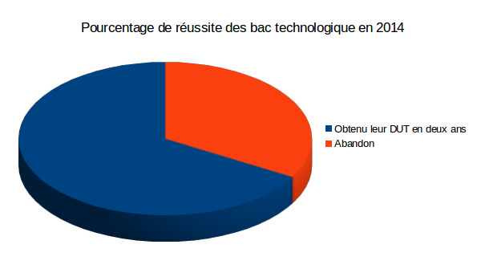
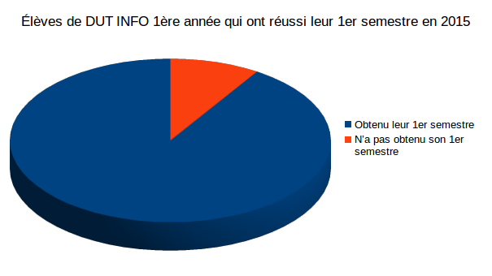
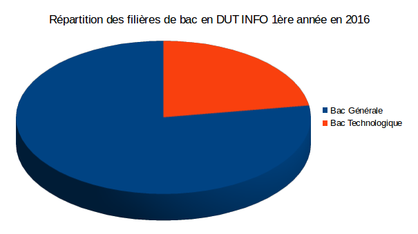
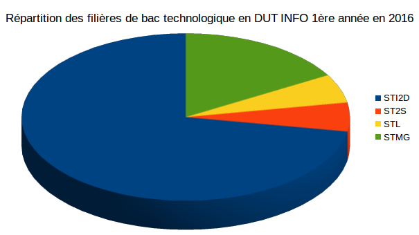

Le département Informatique recrute chaque année des étudiants afin d'intégrer la première année. Ces élèves proviennent généralement de baccalauréat général, peu proviennent de baccalauréat technologique. Néanmoins
nous avons observé depuis quelques années que le taux d'élèves provenant de Baccalauréat technologique était en constante hausse. Nous mettons à disposition ces résultats.

Seulement trois élèves intégraient la première année de DUT informatique en 2014 à Lens.

Deux élèves sur les trois ont obtenu leur DUT en deux ans, le troisième à abandonné.

Sur les onze élèves qui provenaient de BAC technologique, dix ont obtenu leur premier semestre.

En 2016, dix-huit étudiants en première anné proviennent de BACs technologiques.

Sur les 18 BACs technologiques présents en DUT informatique:
13 étudiants proviennent de BAC STI2D.
1 étudiant provient de BAC STL.
1 étudiant provient de BAC ST2S.
3 étudiants proviennent de BAC STMG.
Notre IUT est en quête de diversité et compte tendre une main aux élèves provenant de BACs technologiques.
Si vous avez la moindre question, contactez nous! (informations disponibles dans l'onglet "Contact")